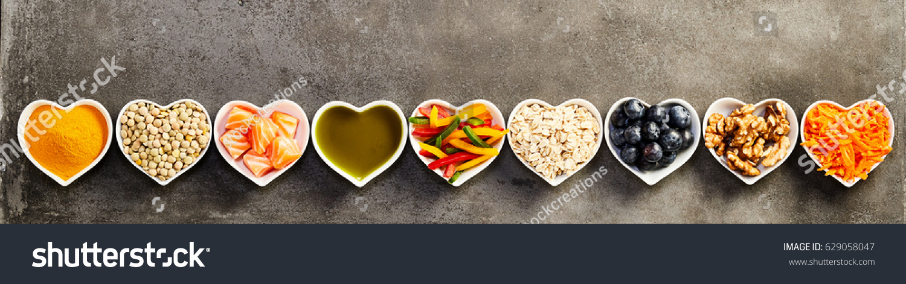

Recipies Store

This is a great recipe for smoked turkey. A barbecue grill is nearly impossible to cook a large bird. A smoker is best for this. I prefer hickory chips or hickory wood. Hickory generates a more even smokiness than other woods, and it does not matter whether the wood is green or seasoned. Mesquite, if not well seasoned, will generate a creosote type coating because of the sap that oozes out of the wood while cooking.
All Items Recipies
List of the all items
A Simply Perfect Roast Turkey